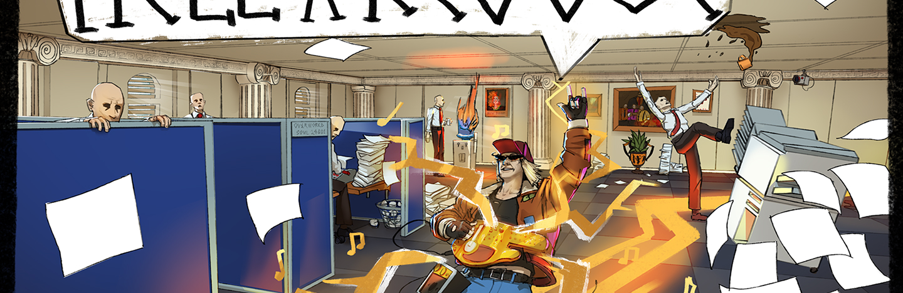
Project Overview
Hell of a Rescue is a 2.5D isometric adventure/strategy game where you play as Rufus, a punk rock deadbeat musician, who must cross corporate hell to find and save Euri from abandoning music forever and selling her soul to her workplace.
The game features a branching structure in which the player’s gameplay choices determine which endings they unlock. The game also reveals alternative paths and outcomes, allowing the player to see what they did not experience through their choices.
Gameplay Video
Production
My primary responsibility during the project was to support the team in maintaining a manageable scope, clear communication, and consistent progress towards the project milestones, while also managing and maintaining regular communication with the client. In addition, I was responsible for playtesting and quality assurance management.
Project Timeline
- Ideation
- Pre-production
- Production
- Polishing
- Week 1
- Functional PrototypeWeek 4
- Alpha BuildWeek 6
- Beta BuildWeek 9
- Gold MasterWeek 12
Team and Project Management
- Leadership and Team Structure → established a clear team structure with designated team leads.
- Team Communication → developed and maintained an effective communication plan.
- Milestone Planning → planned and tracked project milestones.
- Scope Definition and Management → defined, monitored, and managed project scope.
- Development Progress Tracking → monitored development progress and communicated updates to the team.
Client Communications
- Coordinated communication between the development team and the client.
- Managed email correspondence and meeting scheduling.
- Ensured weekly client presentations were prepared and delivered on schedule.
- Distributed presentation materials to the client following meetings.
- Provided game builds and, where appropriate, gameplay videos for client review.
- Documented and tracked client feedback in the Meeting Minutes document.
QA Management
- Recruited and coordinated playtesters.
- Conducted structured and unbiased playtesting sessions.
- Recorded, organised, and digitised playtesting notes and feedback.
- Communicated playtesting results and key findings to the development team.
- Maintained and coordinated the playtesting schedule.
- Created and maintained a QA Management document.
Other Contributions
- Voice acting as Moira Fates.
- Regularly playtesting builds and recording issues in the Polish Needs document maintained by the designer Samjjuwal Adhikary.
- Creating stickers as merchandise for playtesters.
- Taking the game to the Abertay Game Testers event.
- Applying to showcase the game at the DCA, which we got, and I showcased the game there.
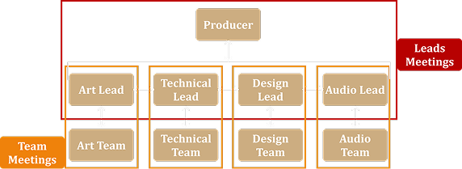
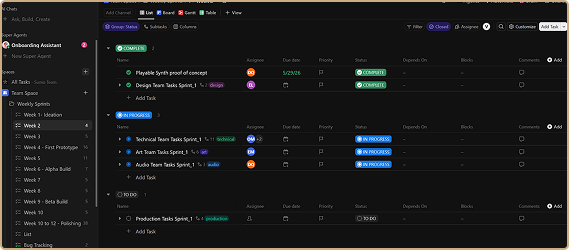
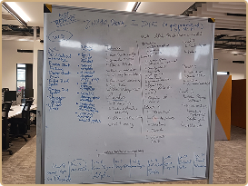
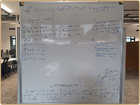
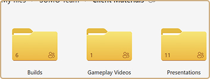
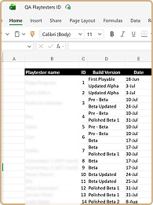
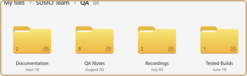
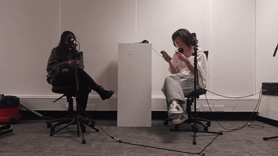
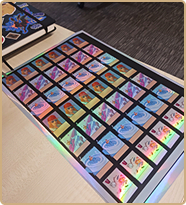
Game Showcasing
To give the game more opportunities for playtesting and visibility, it was showcased at:
- Abertay Game Testers – 17 July
- Abertay Masters Showcase – 28 August
- DCA Game Showcase – 5 September
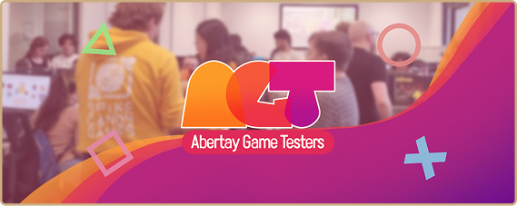
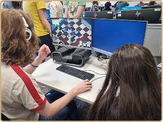
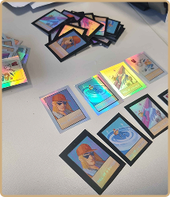
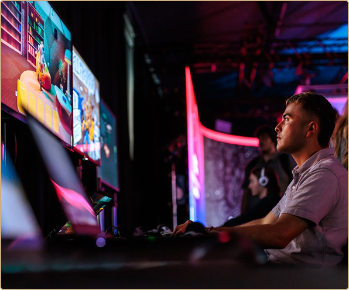
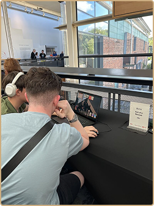
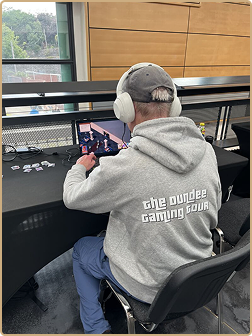
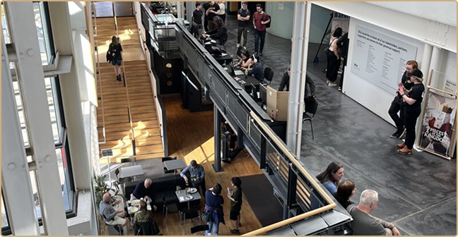